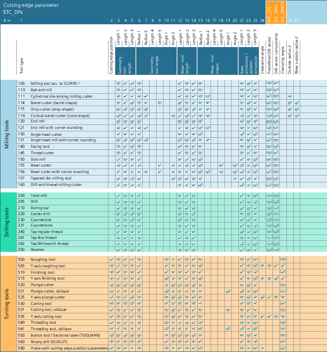
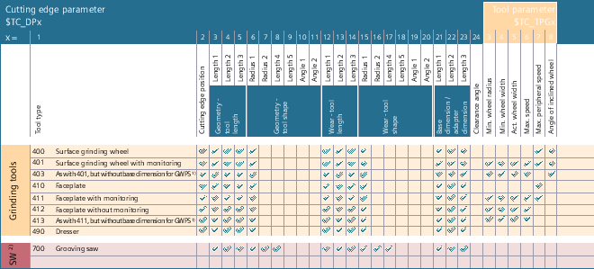

Each tool type is assigned a unique 3-digit number. The assignment of the tool to one of the following technologies or tool groups is realized using the first digit (the hundreds position):
Tool type | Tool group |
|---|---|
1xy | |
2xy | |
3xy | Reserved |
4xy | |
5xy | |
6xy | Reserved |
7xy |
The parameter values to be entered for a tool (tool offset data; TOA data) are stored in system variables. Depending on the specific tool type, several tool parameters can have different meanings.
Tool parameter | Meaning | |
|---|---|---|
$TC_DP1 | Tool type | |
$TC_DP2 | Cutting edge position | For turning tools or for milling/grinding tools with 2D TRC with contour tools. |
| ||
$TC_DP3 | Geometry length 1 | |
$TC_DP4 | Geometry length 2 | |
$TC_DP5 | Geometry length 3 | |
| ||
$TC_DP6 1) | Geometry radius 1 (tool radius 1) | 2D TRC |
Cutting edge radius | Turning tools | |
Tool radius | 3D face milling | |
Diameter | Grooving saw | |
$TC_DP7 1) | Geometry radius 2 | Tools with corner rounding |
Outside radius 1 | Facing tool | |
Corner radius | Milling cutters with corner rounding | |
Groove width | Grooving saw | |
$TC_DP8 1) | Geometry length 4 | Milling/grinding tools |
Cutting tip length | Turning tools | |
Internal circuit - Prime | Prime tools | |
Projection | Grooving saw | |
$TC_DP9 1) | Geometry length 5 | Milling/grinding tools |
Width | Side mill | |
Saw | ||
Cutting tip width | Turning tools | |
Pitch | Tap | |
Tool radius rotary drill (drilled hole radius) | Rotary drill | |
Cutting speed (ManualTurn) | Milling tools | |
Upper ball diameter | Bevel cutter, tapered die milling tool → 3D face milling | |
Reference length outside radius | Barrel milling cutter | |
$TC_DP10 1) | Geometry angle 1 | Milling/grinding tools |
Minimum limit angle | 2D TRC with contour tools | |
Holder angle | Turning tools | |
Tip angle | Drill and thread milling cutter | |
Correction angle | Probe | |
$TC_DP11 1) | Geometry angle 2 | 2D TRC with contour tools: Maximum limit angle 3D face milling: Angle between envelope line and tool longitudinal axis (of conical tools) |
Cutting direction | Turning tools | |
Angle | Tapered milling cutters | |
| ||
$TC_DP12 | Wear length 1 | |
$TC_DP13 | Wear length 2 | |
$TC_DP14 | Wear length 3 | |
| ||
$TC_DP15 | Wear radius 1 | |
$TC_DP16 | Wear radius 2 | |
$TC_DP17 | Wear length 4 | |
$TC_DP18 | Wear length 5 | |
$TC_DP19 1) | Wear angle 1 | |
Inclined position | Oblique turning tools | |
$TC_DP20 | Wear angle 2 | |
| ||
$TC_DP21 | Base length 1 | |
$TC_DP22 | Base length 2 | |
$TC_DP23 | Base length 3 | |
| ||
$TC_DP24 1) | Clearance angle | Turning tools |
Number of teeth | Milling tools | |
Tip angle | Drilling tools | |
| ||
$TC_DPV | Predefined orientation vector | |
$TC_DPV3 | Basic tool orientation: L1 component of the orientation vector | |
$TC_DPV4 | Basic tool orientation: L2 component of the orientation vector | |
$TC_DPV5 | Basic tool orientation: L3 component of the orientation vector | |
$TC_DPVN3 | Basic tool orientation: L1 component of the normal vector | Only for non-rotationally symmetrical tools. |
$TC_DPVN4 | Basic tool orientation: L2 component of the normal vector | Only for non-rotationally symmetrical tools. |
$TC_DPVN5 | Basic tool orientation: L3 component of the normal vector | Only for non-rotationally symmetrical tools. |
$TC_DPNT | Number of teeth, cutting edge parameter 34 | |
| ||
$TC_DPNT | Number of teeth | Milling tools |
$TC_DPROT | Clamping angle | Only for turning tools. |
$TC_DP36 1) | Outside radius 2 | Barrel milling cutter, tapered milling cutter |
$TC_DP37 1) | Wear outside radius 2 | Barrel milling cutter, tapered milling cutter |
| ||
$TC_DP_RADIUS3 1) | Geometry radius 3 | |
$TC_DP_WEAR_RADIUS3 1) | Wear radius 3 | |
$TC_DP_LEN6 1) | Geometry length 6 | |
$TC_DP_WEAR_LEN6 1) | Wear length 6 | |
$TC_DPCE [<t>,<d>] | System variable of an offset data record with T=<t> and D=<d> containing cutting edge number CE. (Unique D no. or user assignment of D no. for cutting edge numbers) | Value range for permissible cutting edge numbers: 1, 2, 3 ... MD18106 |
$TC_DPH [<t>,<d>] | H parameter (Y / extraCuttEdgeParams), Bit 0 = 1 | |
The following tables show which parameter values are required for which tool type:
1) | CLDATA = "cutter location data" (tool position data according to DIN66215) |
Tool parameters for milling, drilling and turning tools
1) | GWPS = Grinding wheel peripheral speed |
2) | ST = Special tools |
Tool parameters for grinding and special tools
| Note |
Unlisted numbers are also permitted, in particular with grinding tools (400-499). |
See also:
Tool compensation memory